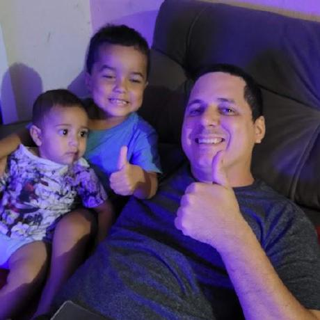

Rafael fontenele
Software Engineer
Contato
- 55 85 99999-8888
- rnf.rafael@gmail.com
- www.rafaeldev.com
- rnfrafael
Skills
HTML, CSS
PHP, MySQL
JavaScript, AJAX
Git & Github
Rafael fontenele
Software Engineer
Contato
Skills
HTML, CSS
PHP, MySQL
JavaScript, AJAX
Git & Github
Olá, sou o Rafael.
Fui um autoditada em HTML, CSS, PHP e MySQL lá nos anos 2009
na época fiz alguns códigos/sistemas, mas tudo muito amador.
Em 2014 comecei a estudar pela Alura e fiz o mini projeto de
agendamento para consultórios. Desde então me afastei da
Programação e agora em 2022 retornei para casa e vou me
tornar um 'DEV', focado principalmente no backend.
branjo Moda Praia
2013-Presente
Sócio/Fundador
Principais